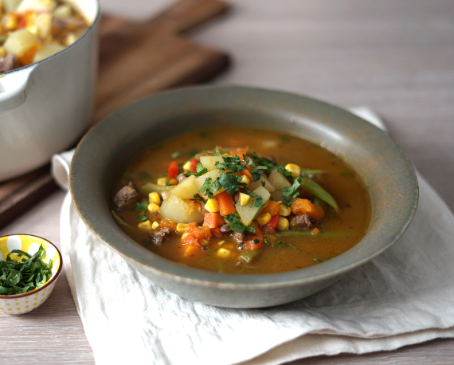

Chilean Carbonada

Carbonada is a typical Chilean dish.
An exquisite meat broth accompanied by local vegetables. An ideal recipe for cold winter days
Ingredients
- Meat
- Potatoe
- Pumpkin
- Olive Oil
- Salt
- Peper
- Onion
- Coriander
- Peppers
Steps
- Fry the onion with olive oil until it looks transparent
- Place the meat with the onion until it is sealed
- Cook the potatoes with the pumpkin and carrot
- Cut the potato, pumpkin and carrot into small cubes
- Add water to the meat and mix with the potatoes, pumpkin and carrots
- Let it cook for 30 minutes